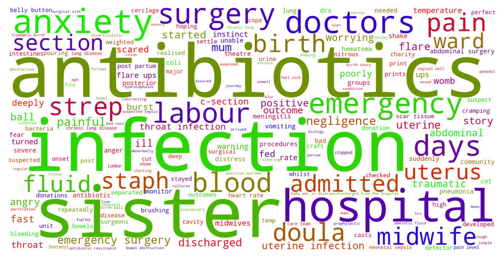

Jump to section:
Samples from Social CorpusHits per UMLS Alias on Social Corpus
Word Cloud Comparison
Embedding Space Comparison
Nearest Neighbors by Semantic Type
Related Analysed Concepts
Samples from Social Corpus
Afterwards , he was at risk of infection so I was worried sick , one of the midwives said the word ' sepsis' and I really didn't need to hear that .
Confidence: 0.772. Reddit link
When I got there , I was in sepsis .
Confidence: 1.000. Reddit link
She became unwell very quickly yesterday and is being treated for suspected sepsis .
Confidence: 1.000. Reddit link
Me and my partner are first time parents , our little lady is 2 weeks old , and was a c section baby after partners waters were trickling for about a week but diagnosed as a watery discharge , this caused sepsis and a 5 day hospital stay .
Confidence: 1.000. Reddit link
Also , what if it gets infected and he gets sepsis from it because I just left a cavity in his mouth to get worse and he died from it !
Confidence: 1.000. Reddit link
I managed to get some sleep but woke up in a cold sweat and shaking - yes I had sepsis yeay !
Confidence: 0.739. Reddit link
It had been up there 16 days and it was lucky I didn't get sepsis from it .
Confidence: 1.000. Reddit link
Nothing about how or why the baby would have gotten sepsis , or anything about how if a baby had that severe of an infection , they would probably have some other symptoms , but I digress .
Confidence: 1.000. Reddit link
He was admitted to the baby ward and treated for suspected sepsis however we would have to wait 48hours for his blood results to come back !
Confidence: 1.000. Reddit link
my baby had sepsis .
Confidence: 0.632. Reddit link
Hits per UMLS Alias on Social Corpus
-
sepsis
67 hits
-
septicemia
6 hits
-
toxemia
4 hits
-
poisoning blood
4 hits
-
septicaemia
2 hits
-
infection blood stream
2 hits
-
poisonings blood
1 hits
-
blood poisoning
0 hits
-
septicemia nos
0 hits
-
unspecified septicemia
0 hits
-
blood poisonings
0 hits
-
systemic sepsis
0 hits
-
sepsis syndrome
0 hits
-
septicemias
0 hits
-
septicaemia nos
0 hits
-
blood poisoning nos
0 hits
Word Cloud Comparison
Keywords matching C0036690
Keywords matched against concept. Word size represents frequency.
Keywords co-occurring with C0036690
Co-occurrence is measured at the document-level (i.e. Reddit submissions). Frequencies are normalized to account for keywords common to all CUIs.
Embedding Space Comparison
T-SNE comparison for word embeddings learned from medical domain (EuroPMC) and social media (Reddit) independently.
Pearson correlation for union of closest 1000 neighbors: -0.150
Nearest Neighbors by Semantic Type
Most similar concepts in each of the selected UMLS semantic types. Based on concept embeddings from social corpus.
T047 (Disease or Syndrome)
-
C0036690
Sepsis
1.000 Similarity
-
C0042384
Vasculitis
0.817 Similarity
-
C0042769
Viral infection
0.809 Similarity
-
C0009450
Infection
0.805 Similarity
-
C5139167
Severe infection
0.804 Similarity
-
C0340238
Infection bronchial
0.789 Similarity
-
C0010692
Bladder infection
0.784 Similarity
-
C0205721
Hospital infection
0.780 Similarity
T046 (Pathologic Function)
-
C0269810
Sepsis during labor
0.831 Similarity
-
C4075684
Hypoxemia during surgery
0.798 Similarity
-
C0001122
Acidosis
0.792 Similarity
-
C0007642
Cellulitis
0.785 Similarity
-
C0393391
Infection after injection
0.756 Similarity
-
C0043241
Infection wound
0.753 Similarity
-
C0034065
Pulmonary embolism
0.741 Similarity
-
C3714514
Infections
0.737 Similarity
T061 (Therapeutic or Preventive Procedure)
-
C0547605
Infection prevention
0.734 Similarity
-
C0023911
Liver transplant
0.692 Similarity
-
C0282638
Prescription prophylactic antibiotic
0.686 Similarity
-
C0020674
Hypothermia induced
0.677 Similarity
-
C2114838
Prophylactic antibiotics prescribed
0.675 Similarity
-
C0193373
Liver surgery
0.671 Similarity
-
C0399997
Emergency appendectomy
0.655 Similarity
-
C0005961
Bone marrow transplant
0.654 Similarity
T005 (Virus)
-
C3743464
Mycobacteriophage whirlwind
0.726 Similarity
-
C0086776
Parvovirus
0.693 Similarity
-
C0205939
Cold virus common
0.686 Similarity
-
C0597404
Respiratory virus
0.665 Similarity
-
C4433204
King virus
0.647 Similarity
-
C5058350
Fairfax lookout virus
0.632 Similarity
-
C0205676
T viruses
0.632 Similarity
-
C0042776
Virus
0.632 Similarity
T184 (Sign or Symptom)
-
C0015967
Fever
0.717 Similarity
-
C0558489
Renal pain
0.689 Similarity
-
C1269642
Pain from metastases
0.685 Similarity
-
C0687713
Gastrointestinal pain
0.667 Similarity
-
C0238740
Severe back pain
0.667 Similarity
-
C0235031
Neurological symptoms
0.662 Similarity
-
C0392171
Flu like symptoms
0.660 Similarity
-
C0812426
Kidney trouble
0.658 Similarity
T019 (Congenital Abnormality)
-
C0152021
Congenital heart disease
0.708 Similarity
-
C0000768
Birth defect
0.681 Similarity
-
C0266449
Brain malformation
0.653 Similarity
-
C0149530
Congenital heart block
0.649 Similarity
-
C0027794
Neural tube defect
0.646 Similarity
-
C0018798
Heart defect
0.642 Similarity
-
C0344735
Septum primum defect
0.641 Similarity
-
C0019555
Dislocated hip since birth
0.636 Similarity
T190 (Anatomical Abnormality)
-
C0016169
Sinus
0.694 Similarity
-
C4025734
Anomaly scalp
0.634 Similarity
-
C0240063
Keyhole iris
0.587 Similarity
-
C0149952
Ovary torsion
0.580 Similarity
-
C0019294
Inguinal hernia
0.563 Similarity
-
C3887590
Stricture ureter
0.563 Similarity
-
C0281892
Left hernia
0.555 Similarity
-
C0266785
Umbilical cord issue
0.551 Similarity
T101 (Patient or Disabled Group)
-
C0008098
Child hospitalized
0.694 Similarity
-
C0871503
Dying patients
0.635 Similarity
-
C0682161
Dually diagnosed
0.628 Similarity
-
C1516213
Cancer patient
0.606 Similarity
-
C1456639
Living with cancer
0.598 Similarity
-
C4727511
Women who have mastectomy
0.564 Similarity
-
C0021562
Inpatient
0.554 Similarity
-
C0233363
Monoamniotic twins
0.551 Similarity
T059 (Laboratory Procedure)
-
C0018941
Blood test
0.693 Similarity
-
C0023508
White blood cells
0.671 Similarity
-
C0023901
Liver tests
0.654 Similarity
-
C0042014
Urine test
0.644 Similarity
-
C0014772
Counting rbc
0.629 Similarity
-
C0009555
Full blood count
0.627 Similarity
-
C0430402
Bacterial cultures
0.625 Similarity
-
C0368930
Clotting time
0.620 Similarity
T048 (Mental or Behavioral Dysfunction)
-
C0338927
Hospitalism
0.688 Similarity
-
C0233705
Fear getting cancer
0.661 Similarity
-
C0013415
Dysthymia
0.660 Similarity
-
C0038436
Ptsd
0.652 Similarity
-
C0036857
Severe mental handicap
0.648 Similarity
-
C0563172
Dangerous plans
0.645 Similarity
-
C0236792
Aspergers disease
0.614 Similarity
-
C0036337
Disorder schizoaffective
0.601 Similarity
T023 (Body Part, Organ, or Organ Component)
-
C0545792
Kidney liver
0.687 Similarity
-
C0024109
Lung
0.673 Similarity
-
C0034052
Pulmonary arteries
0.670 Similarity
-
C0588054
Lymph nodes neck
0.661 Similarity
-
C0024204
Lymph nodes
0.661 Similarity
-
C0225730
Left lung
0.660 Similarity
-
C0032005
Pituitary
0.660 Similarity
-
C0030274
Pancreas
0.660 Similarity
T060 (Diagnostic Procedure)
-
C0033053
Prenatal diagnoses
0.687 Similarity
-
C0920688
Cancer diagnosis
0.678 Similarity
-
C0596473
Detection early
0.655 Similarity
-
C1882082
New diagnosis
0.630 Similarity
-
C0004398
Autopsy
0.606 Similarity
-
C0871813
Medical diagnosis
0.596 Similarity
-
C0011900
Diagnosed
0.596 Similarity
-
C0195324
Cone biopsy
0.594 Similarity
T201 (Clinical Attribute)
-
C0012655
Predisposition
0.677 Similarity
-
C0429622
Oxygen supply
0.601 Similarity
-
C0231832
Breathing rate
0.596 Similarity
-
C0442709
End diastolic
0.576 Similarity
-
C0521982
Successful treatment
0.563 Similarity
-
C0007165
Heart output
0.562 Similarity
-
C3827727
Undetectable
0.552 Similarity
-
C0032930
Trigger
0.521 Similarity
T042 (Organ or Tissue Function)
-
C0005778
Clotting
0.675 Similarity
-
C0232102
Blood fluidity
0.638 Similarity
-
C0232741
Liver function
0.600 Similarity
-
C0150479
Blood gas
0.597 Similarity
-
C1160388
Respiratory tube development
0.585 Similarity
-
C0231940
Oxygenation
0.577 Similarity
-
C0232804
Kidney function
0.577 Similarity
-
C0042396
Vasospasm
0.574 Similarity
T195 (Antibiotic)
-
C0003232
Antibiotics
0.670 Similarity
-
C0723285
Septa
0.614 Similarity
-
C0718575
Antibiotics ear
0.614 Similarity
-
C0279516
Antibacterial
0.580 Similarity
-
C0013090
Doxycycline
0.567 Similarity
-
C0002645
Amoxicillin
0.561 Similarity
-
C0030842
Penicillin
0.496 Similarity
-
C0718950
Biomox
0.460 Similarity
T079 (Temporal Concept)
-
C0439588
Acute chronic
0.669 Similarity
-
C4025592
Late onset
0.642 Similarity
-
C0032790
After surgery
0.617 Similarity
-
C0205191
Chronic
0.604 Similarity
-
C0332152
Prior
0.599 Similarity
-
C2945760
Recurrent
0.584 Similarity
-
C2826771
Birth year
0.584 Similarity
-
C0205178
Acute
0.583 Similarity
T037 (Injury or Poisoning)
-
C0160420
Kidney injury
0.667 Similarity
-
C0023176
Lead poisoning
0.659 Similarity
-
C0016479
Food poisoning
0.636 Similarity
-
C0269858
Traumatic lesion during delivery
0.629 Similarity
-
C0032343
Poisoning
0.617 Similarity
-
C3203359
Ruptures
0.604 Similarity
-
C0417108
Jump from burning hospital
0.600 Similarity
-
C0332666
Injuries old
0.593 Similarity
T007 (Bacterium)
-
C0018154
Gram positive bacteria
0.663 Similarity
-
C0004611
Bacteria
0.593 Similarity
-
C0036111
Salmonella
0.558 Similarity
-
C0995648
Genus quinella
0.547 Similarity
-
C0014834
E coli
0.530 Similarity
-
C0579233
Group b strep
0.488 Similarity
-
C3137302
Brownia
0.486 Similarity
-
C3801085
Enorma
0.468 Similarity
T031 (Body Substance)
-
C0007806
Spinal fluid
0.643 Similarity
-
C0225379
Upper respiratory fluid
0.623 Similarity
-
C1442199
Blood or tissue
0.622 Similarity
-
C0005835
Blood stained
0.616 Similarity
-
C0005767
Blood
0.615 Similarity
-
C0024202
Lymph
0.595 Similarity
-
C0012621
Discharge
0.595 Similarity
-
C0032105
Plasma
0.594 Similarity
T034 (Laboratory or Test Result)
-
C5201036
Low platelets
0.635 Similarity
-
C0241988
M spike
0.615 Similarity
-
C0741132
Antibody positive
0.608 Similarity
-
C2266672
Clotting time finding
0.600 Similarity
-
C1287351
Liver enzymes
0.589 Similarity
-
C0019029
Hemoglobin levels
0.586 Similarity
-
C0427729
Urine blood test = negative
0.584 Similarity
-
C0849535
Blood test results
0.583 Similarity
T074 (Medical Device)
-
C0454152
Blocking kidney
0.630 Similarity
-
C0183884
Tube test
0.625 Similarity
-
C0462877
Oxygen giving set
0.585 Similarity
-
C3880755
Anaphylactic kit
0.580 Similarity
-
C0180236
Curetting
0.577 Similarity
-
C0179350
Blood gas monitor
0.577 Similarity
-
C3696780
Tube oxygen
0.575 Similarity
-
C0085678
Ng tube
0.567 Similarity
T049 (Cell or Molecular Dysfunction)
-
C4725191
Stop lost
0.623 Similarity
-
C1705285
Mutated
0.599 Similarity
-
C0544885
Stop gain
0.568 Similarity
-
C0002938
Aneuploidy
0.541 Similarity
-
C0008628
Del
0.539 Similarity
-
C0008625
Chromosomal abnormality
0.529 Similarity
-
C0040715
Translocation
0.488 Similarity
-
C0041107
Trisomy
0.487 Similarity
T039 (Physiologic Function)
-
C0035203
Ventilation
0.620 Similarity
-
C0232338
Blood flow
0.566 Similarity
-
C3179159
Sedative effects
0.540 Similarity
-
C0232851
Flow urine
0.534 Similarity
-
C0035245
Lung function
0.515 Similarity
-
C2256369
Heart process
0.503 Similarity
-
C0599423
Joint stress
0.501 Similarity
-
C0025320
Change
0.500 Similarity
T032 (Organism Attribute)
-
C0949285
Antibiotic resistance
0.600 Similarity
-
C0019425
Heterozygous
0.555 Similarity
-
C0805393
Breathing spontaneous
0.541 Similarity
-
C0220898
Susceptible
0.512 Similarity
-
C0017504
Gestational age
0.512 Similarity
-
C0020969
Natural immunity
0.509 Similarity
-
C0557155
Life event
0.491 Similarity
-
C0026578
Mosaicism
0.482 Similarity
T067 (Phenomenon or Process)
-
C0023983
Long term effects
0.593 Similarity
-
C0034897
Recurring
0.591 Similarity
-
C0035020
Relapse
0.527 Similarity
-
C0337240
Fall while being carried
0.516 Similarity
-
C0012652
Outbreak
0.508 Similarity
-
C0868945
Deterioration
0.502 Similarity
-
C0677038
Increase pressure
0.498 Similarity
-
C0013956
Emergency
0.491 Similarity
T100 (Age Group)
-
C3494262
Extremely preterm infant
0.589 Similarity
-
C4048294
Preterm baby
0.547 Similarity
-
C4551581
Full term baby
0.528 Similarity
-
C0021289
Newborn
0.480 Similarity
-
C0596728
65 years old
0.479 Similarity
-
C3146221
Juvenile
0.421 Similarity
-
C0680085
Early adulthood
0.417 Similarity
-
C0682054
Mature adult
0.406 Similarity
T200 (Clinical Drug)
-
C0723917
Triple antibiotic ointment
0.580 Similarity
-
C3218395
Papain pill
0.558 Similarity
-
C1163679
Injections sterile water
0.517 Similarity
-
C3216620
Progesterone vaginal product
0.477 Similarity
-
C1242003
Mol iron tablets
0.455 Similarity
-
C5222490
Progesterone injection
0.454 Similarity
-
C0307304
Pitocin injection
0.451 Similarity
-
C4048176
Oxytocin injection
0.442 Similarity
T018 (Embryonic Structure)
-
C0440731
Fetal brain
0.576 Similarity
-
C0231024
Neural tube
0.558 Similarity
-
C0008508
Chorionic villi
0.531 Similarity
-
C0015935
Fetal heart
0.513 Similarity
-
C0553522
Cord placenta umbilical
0.507 Similarity
-
C0008503
Chorionic
0.506 Similarity
-
C0041637
Umbilical vein
0.502 Similarity
-
C1278988
Entire placenta
0.499 Similarity
T054 (Social Behavior)
-
C0679426
Incompatibility
0.560 Similarity
-
C0282657
Infibulations
0.533 Similarity
-
C1261512
Attack
0.511 Similarity
-
C0032492
Polygamous
0.492 Similarity
-
C0019421
Straight
0.492 Similarity
-
C0597728
Protected sex
0.482 Similarity
-
C0582101
Talking about dying
0.460 Similarity
-
C4277668
Anti vaccine group
0.457 Similarity
T041 (Mental Process)
-
C0679201
Infer
0.557 Similarity
-
C3838995
Ability recognize symptoms
0.533 Similarity
-
C0035280
Retention
0.529 Similarity
-
C0524369
Mid life crisis
0.521 Similarity
-
C0424157
Fear going crazy
0.516 Similarity
-
C0871504
Test anxiety
0.511 Similarity
-
C0025361
Thought process
0.509 Similarity
-
C0870135
Anger control
0.503 Similarity
T044 (Molecular Function)
-
C0369768
Oxygen saturation
0.549 Similarity
-
C1721104
Breaks dna
0.486 Similarity
-
C0010357
Cross reactive
0.454 Similarity
-
C1152025
Docs
0.444 Similarity
-
C1150342
Dopachrome rearranging enzyme
0.436 Similarity
-
C0301647
Strand breaks
0.430 Similarity
-
C0887940
Gene arrangements
0.426 Similarity
-
C1749457
Ligands activity
0.408 Similarity